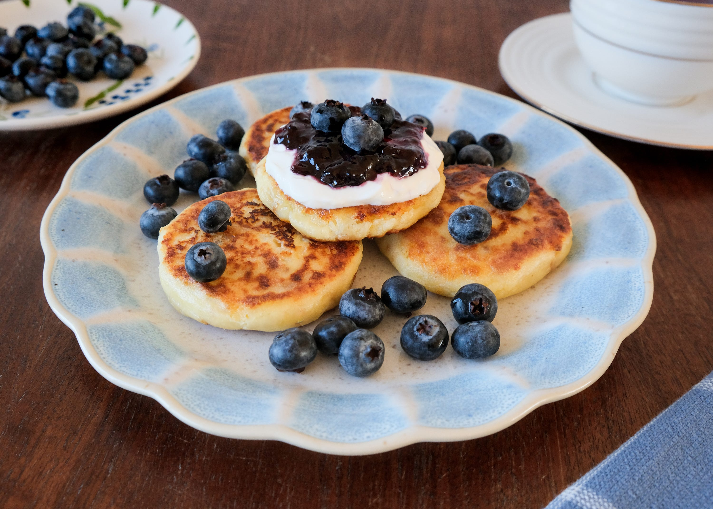

Syrnyky

Description
Syrnyky fried cheese pancakes, made from sweet farmer’s cheese, are popular in several East Slavic as well as other cuisines. The fresh, unaged curd cheese in this recipe goes by many names: quark, tvorog (творог), syr (сир), white cheese and farmer’s cheese among them. Even strained cottage cheese would work in syrnyky, the Ukrainian name for these sweet cheese pancakes.
Ingredients
- 450 grams farmer cheese
- 1 large egg
- 3 tablespoons sugar
- 1 teaspoon vanilla sugar
- some salt
- all-purpose flour, for coating
- 3 tablespoons sunflower oil
How to cook
- In a large mixing bowl, combine the farmer cheese, the egg, and both sugars. Add a generous pinch of salt and mix until thoroughly combined.
- Add the flour to a large, shallow dish. Set aside.
- Generously grease your hands with oil to keep the mixture from sticking to them. Take a heaping tablespoon of the farmer cheese mixture and roll it into a ball. Dredge the ball in flour, rolling it around so that the whole surface is covered. Place the cheese ball on a plate and press it down with your hand to form a thick pancake-like shape. Repeat the process with the remaining cheese mixture.
- Heat the remaining oil in a large frying pan over medium heat. Working in batches, place the farmer cheese pancakes into the pan, keeping a little distance between them. Fry for about 3 minutes on each side or until golden brown and crispy.
- Transfer to a large serving dish and serve with your favorite toppings.
Home